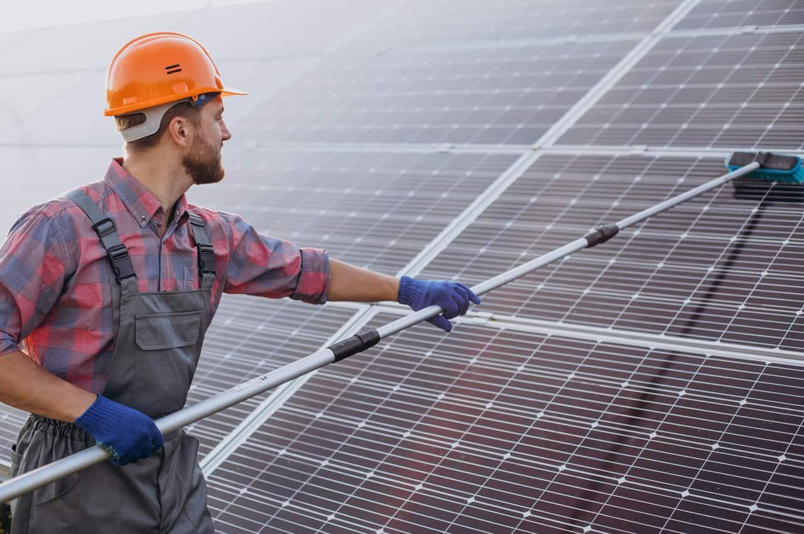

Campo Eletromagnético
SubEspulsa a poeira usando campos eletromagnéticos
O acúmulo de poeira em painéis solares e sistemas de ventilação reduz drasticamente a eficiência energética.
A manutenção manual atual é custosa, ineficiente e muitas vezes inviável em áreas remotas.

Utilizamos o sistema EDS terrestre para gerar campos eletromagnéticos ajustáveis que repelem qualquer detrito.
O sistema integra sensores de luminosidade e comunicação via satélite para uma operação totalmente autônoma.
Espulsa a poeira usando campos eletromagnéticos
Identifica a luminosidade e aciona o sistema apenas quando necessário.
Utiliza dados satelitais para otimizar a operação do sistema.
Maximizar a geração de energia limpa através da automatização da limpeza contínua dos equipamentos.
Reduzir radicalmente os custos operacionais com um sistema analítico inteligente de acúmulo de poeira.

Empresas de energia solar, indústrias pesadas e administradores de sistemas de ventilação em larga escala.
Focamos em operações que buscam sustentabilidade, otimização de recursos e redução de manutenção preventiva.

Economia inteligente: desligamento automático noturno e preventivo durante chuvas rastreadas por satélite.
Eficiência máxima garantida pela variação entre modos EDS, temperatura, acústica e limpeza por ar.

O sistema monitora constantemente a densidade da poeira e cruza dados meteorológicos em tempo real.
Se houver sujeira sem previsão de chuva, o modo de limpeza adequado é ativado instantaneamente.